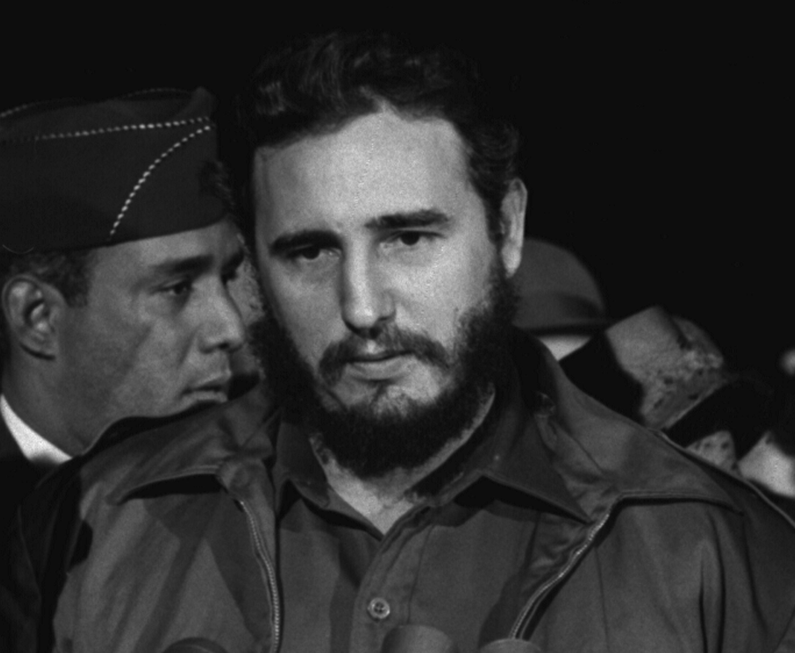
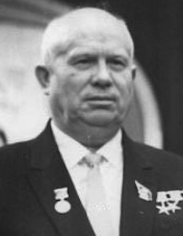
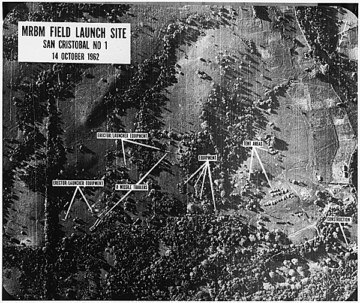
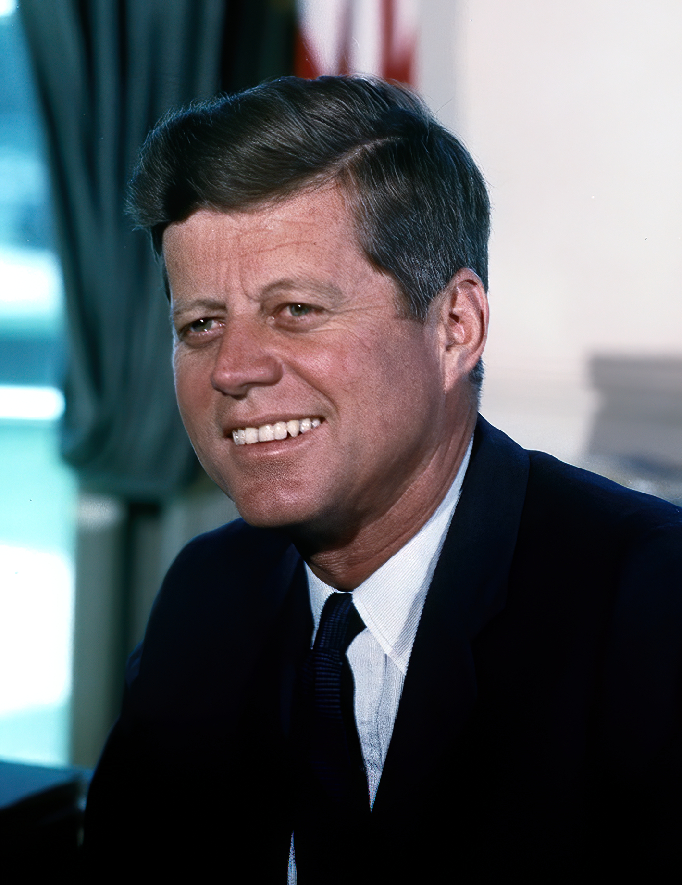
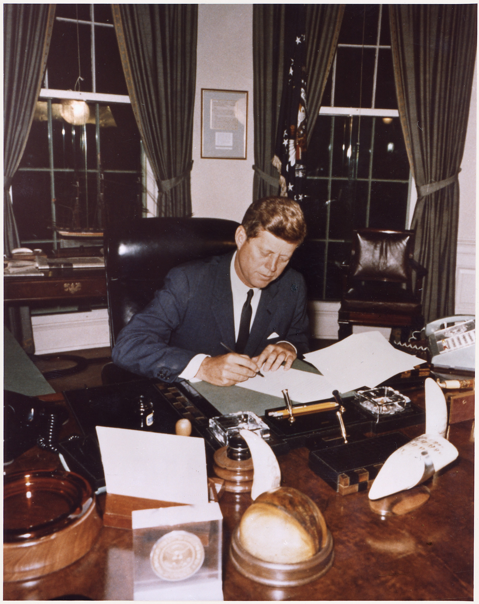
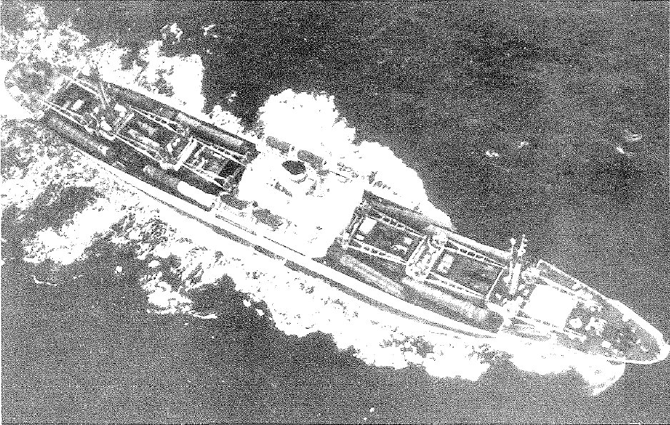

一、危机从哪里来
1959—1961年 · 历史解释 · 已核阅指定范围
古巴不是一张空白地图

菲德尔·卡斯特罗抵达华盛顿时的肖像照片 · 卡斯特罗，1959年4月15日抵达华盛顿的照片裁图。Warren K. Leffler / U.S. News & World Report collection / Library of Congress，LC-U9-2315-6。早于1962年，用于辨认参与者。
创作：1959-04-15（拍摄）；Commons现有裁图2016-11-26；事件：1962年10月（解释对象）；照片早于危机；Warren K. Leffler；U.S. News & World Report Magazine Photograph Collection / Library of Congress；既有裁图Indopug。
下载Commons现有裁图；原页面记录2016年裁去27%横向、46%纵向。仍可见旁人局部，不据其推断危机关系。本地未再次裁切或修图。；证据边界：人物辨认，不代表古巴导弹危机当时情绪、会谈或同盟关系。版权依据是Leffler员工摄影及馆藏权利状态，不是卡斯特罗公众人物身份。
核阅：已读Commons身份、裁图与PD-USNWR说明；实际取得LOC官方索引完整记录（作者、1959-04-15、无已知出版限制），独立打开LOC页面403，保留此访问边界；已查看下载文件
图片出处 · Public domain according to Commons PD-USNWR；LOC作品记录：No known restrictions on publication1962年的危机之前，古巴与美国已经发生激烈冲突。1959年，卡斯特罗领导的新政权取代巴蒂斯塔政府。此后，古巴接收美国在岛上的经济资产，并与苏联靠近。美国把邻近的社会主义政权看作冷战威胁；古巴则把美国干预视为本国政权和主权面临的危险。两国对安全的理解，从一开始就不相同。
1961年4月17日，一支由美国中央情报局训练、资助的古巴流亡者部队在猪湾登陆，约两天后失败。美国随后推动代号“猫鼬”的秘密行动，目标仍是推翻卡斯特罗政权。行动计划涉及破坏、宣传和支持反对力量，但计划中的军事干预并未按原设想发生。
这段前史解释了古巴为什么会认真看待再次入侵的可能。它并不能证明美国已经决定在某个确定日期入侵，也不能让我们把后来的每一种苏古行动都解释成被迫且唯一的选择。威胁真实存在，选择仍由行动者作出。
[baypigs]
1962年夏—秋 · 历史解释 · 已核阅指定范围
苏联把导弹部署到古巴，改变了什么

尼基塔·赫鲁晓夫头像（德国联邦档案照片裁图） · 赫鲁晓夫，1963年1月21日柏林会议照片的既有裁图。Bundesarchiv, Bild 183-B0121-0010-053 / Sturm, Horst / CC-BY-SA 3.0 DE。用于人物辨认，不是1962年危机现场。
创作：1963-01-21（拍摄）；Commons现有裁图2022-09-11；事件：1962年10月（解释对象）；照片拍摄晚于危机；Horst Sturm；Bundesarchiv；既有裁图Emiya1980 / Bakir123。
下载Commons已有裁图；历史记录包含裁切、亮度/对比度调整。当前版202×261，仅适合小幅头像。本地未再编辑；继续以CC BY-SA 3.0 DE提供此图，保留署名与许可链接。；证据边界：只用于认识行动者，不从照片姿态推断政治立场或谈判意见。不得称公版或CC0；不得将202×261的小图声称为高清全屏素材。
核阅：已读裁图页、Bundesarchiv贡献的原图页及明确人物原始图注，已读CC BY-SA 3.0 DE官方说明；已查看下载文件
图片出处 · CC BY-SA 3.0 Germany；须署名、链接许可、说明改动；衍生图遵守同许可1962年夏，赫鲁晓夫与古巴方面秘密商定在岛上部署苏联核导弹。古巴希望增强防御，使美国再次入侵的代价高到难以接受；赫鲁晓夫在危机中的信件也把援古解释为防御，并拿美国在苏联周边的基地和导弹作比较。这是理解苏方理由的重要材料，但当事人对自身动机的解释，仍不等于所有部署动机的完整清单。
核导弹使古巴的安全问题与美苏之间的核对抗直接连在一起。对美国政府而言，这些武器能从邻近地区打击美国目标，秘密部署还挑战了美方此前发出的警告。对苏方而言，美国早已在盟国部署威胁苏联的武器，美方要求自身安全却不给对方同等待遇。双方对“防御”和“进攻”的说法，不能仅凭武器所在位置就调和。
古巴同意让苏联部署武器，不代表卡斯特罗可以独自决定苏联核武的使用，也不代表苏联作出的每项对美承诺都先征得古巴同意。盟友具有共同目标，也可能在风险、控制权与撤退条件上发生分歧。后来的谈判正暴露了这种分歧。
[state] [frus91] [letter26]
二、发现导弹之后，怎样选择
1962年10月14—16日 · 历史解释 · 已核阅指定范围
拍到、识别与总统获知，是三个环节

圣克里斯托瓦尔一号中程导弹发射场侦察照片 · 1962年10月14日圣克里斯托瓦尔一号发射场的高空侦察照片。NARA 193926 / 美国国防部。英文框与指示线来自下载材料；标注制作时间未核定。
创作：1962-10-14（侦察照片拍摄）；标注和数字化制作日期未核定；事件：1962-10-14（影像记录日期）；不要标成10月22日公开讲话的现场；United States Department of Defense；National Archives and Records Administration / JFK Library 馆藏，个人摄影者未在所读记录中注明。
直接下载NARA公开GIF完整图；本地未裁切、未重绘、未增删标注。；证据边界：用于说明情报图像的外观和地点；不自行识别每一设备，不据此推断核弹头状态、决策者获知时间或危机因果。所读权利状态限定美国，不声称已核定所有司法辖区。
核阅：已读取NARA贡献的Commons/DPLA元数据与NARA官方版权政策、已检查NARA直链下载图；NARA目录页和RightsStatements独立页面本次抓取失败，未标为已独立读到
图片出处 · No Copyright - United States（NARA向DPLA提供的权利状态；美国国防部材料）10月14日，美国U-2侦察机拍到古巴圣克里斯托瓦尔一带的导弹设施。图像需要经过处理和专业判读，才能进入决策。肯尼迪在10月16日早晨听取简报；通常所说的“十三天”，正是从16日算到28日，而不是从照片拍摄或22日公开讲话才开始。
照片把怀疑变成了可以提交给总统、顾问和公众讨论的具体证据。但决策者仍要判断设施能否投入使用、还有哪些武器未被发现，以及军事行动能不能消除威胁。知道有发射场，不等于知道全部核弹头的位置，更不等于掌握对方的最终意图。
所附航拍图能让我们看到当时情报材料的样子。图上的英文标注来自原材料，本文不凭这张图自行估算武器数量或完成程度。历史解释要同时说清证据让人知道了什么，以及它还没有回答什么。
[photo-nara] [jfk16]
1962年10月16—20日 · 历史解释 · 已核阅指定范围
为什么没有立即空袭
肯尼迪与核心顾问从16日起讨论应对。主要方向包括空袭并可能进一步入侵，也包括海上隔离、施压和继续交涉。正式名为ExComm的执行委员会到22日才成立；机构名称的日期，不能抹去此前已经发生的决策讨论。
空袭看起来更直接，却留下两个难题：能否摧毁全部目标？如果造成苏联人员伤亡，对方会怎样回应？入侵则意味着更大规模的战斗和升级。隔离没有立即摧毁岛上的导弹，但能限制新的进攻性装备运入，并给双方保留继续选择的时间。
10月20日，肯尼迪决定采用隔离方案。这并不是认定隔离一定成功，而是先使用一种比立即攻击更可分步推进的手段。此后，军事准备并未停止，外交也没有退出。危机中的决策不是一次会议定下结局，而是不断根据对方行动重新评估。
[jfk16] [jfk20] [jfk22] [jfk27]
三、公开对抗与争取时间
1962年10月22日 · 历史解释 · 已核阅指定范围
危机从秘密讨论变成公开对抗

约翰·肯尼迪白宫肖像照片 · 肯尼迪，1963年7月11日白宫肖像照片。Cecil W. Stoughton / JFK Library，ST-C237-1-63。用于认识行动者；晚于古巴导弹危机，不代表1962年具体会谈。
创作：1963-07-11（拍摄）；数字化日期未核定；事件：1962年10月（解释对象）；照片晚于危机，不是危机现场；Cecil W. Stoughton，白宫摄影师；John F. Kennedy Presidential Library and Museum。
下载Commons现有肖像提取版；所读文件页注明由更大原照片提取。本地不再裁切、调色或AI增强。；证据边界：人物识别上下文；不从表情推断立场、不将照片日期冒充事件日期。公务公版判断来自具体作品来源，不能由公众人物身份推导。
核阅：已读Commons身份、作者、许可及版本记录；已读JFK Library1963-07-11肖像目录与版权说明；已查看下载文件
图片出处 · Public domain（美国总统行政办公室雇员公务作品；Commons PD-USGov-POTUS）10月22日晚7时，肯尼迪通过电视向美国公众公布苏联在古巴部署导弹的情况，要求撤除，并宣布实施海上隔离。公众此时才知道的消息，政府已经讨论了近一周。公开讲话既解释政策，也把美国的要求和决心展示给苏联、盟友及国内社会。
肯尼迪同日致信赫鲁晓夫。他要求移除威胁，也表示相信对方不会有意把世界拖入谁都无法获胜的战争。这封信把强硬要求与避免误判放在一起：美国希望对方退让，又需要对方理解哪些行动可能导致更严重的后果。
向公众作出的明确承诺有助于动员支持，也会增加改变政策的政治代价。因此，公开与秘密渠道并不是多余的重复。公开渠道表明立场，私下渠道则可能让领导人试探那些不便马上宣布的调整。
[jfk22] [letter22]
1962年10月23—25日 · 历史解释 · 已核阅指定范围
隔离争取了时间，却没有让危险消失

肯尼迪签署古巴隔离公告 · 肯尼迪于1962年10月23日签署隔离公告；晚于22日电视讲话，早于24日实施，不把不同步骤合为同一瞬间。
创作：1962年10月23日；事件：1962年10—11月；具体事件日期见图注；Robert LeRoy Knudsen / Office of the Naval Aide to the President / NARA。
NARA向Commons提供的JPEG版本；本地未裁切、修图或AI增强。；证据边界：只表明签署场景，不由表情推断决心、不代替公告内容与行动记录。
核阅：本轮已读Commons身份、日期、出处、许可和版本记录；已下载并实际查看图像。未独立调取原底片。
图片出处 · Public domain in the United States（美国联邦政府雇员公务作品；来源页具体标示）美国把行动称为“quarantine”，本稿译作“海上隔离”，区别于通常意味着战争状态的“封锁”。它针对运往古巴的进攻性军事装备，不是停止一切民用航运。这个用词有美方争取法律和地区支持的考虑，并不表示苏联接受其合法性；赫鲁晓夫把它看作胁迫和侵略。
隔离于24日开始实施。一些苏联货船转向，另一些经过检查或被认定不载违禁装备后获准继续航行。25日，运送石油的“布加勒斯特”号获放行。海上行动因此不能简化成“所有船都被挡住”或“苏方船一退，危机就结束”。
岛上已经存在的导弹设施仍在推进，海空部队也在接近彼此。美国需要时间促成撤弹，苏方却可能把持续施压理解为攻击准备。给谈判留下时间和让升级风险增加，可以在同一行动中同时发生。
[state] [jfk24] [jfk25]
1962年10月25日 · 历史解释 · 已核阅指定范围
照片也进入了联合国的政治现场
10月25日，美国驻联合国代表阿德莱·史蒂文森在安理会以照片展示古巴导弹设施，质问苏联代表佐林。此前供秘密会议使用的情报，成为争取国际支持、挑战对方公开立场的工具。证据的作用随着受众变化：不仅要让本国领导人相信，也要让其他国家理解美国为什么行动。
联合国代理秘书长吴丹提出缓和紧张、给谈判留出时间的建议。美方担心暂缓行动会让导弹继续留在岛上；苏方后来也在信中提及吴丹的调解。调解提供了沟通和核查的场所，却无法自动消除双方对安全条件的分歧。
没有一张照片能替所有参与者完成谈判。照片证明某些设施的存在，并不能单独回答谁有权检查、如何确认撤除，以及古巴和土耳其是否接受有关安排。这些问题要靠具体承诺和后续执行处理。
[jfk25] [frus91]
四、最危险的两天
1962年10月26日 · 历史解释 · 已核阅指定范围
第一次可以辨认的退路出现
26日，记者约翰·斯卡利接到苏联使馆人员福明传递的方案。同一天，赫鲁晓夫的长信也把古巴安全与武器问题联系起来。两个渠道给出了相近方向：如果美国保证不入侵古巴，撤除威胁就有了可以讨论的基础。
赫鲁晓夫在信中反复强调战争可能失控。他把苏方援古解释为防御，认为美国若不攻击古巴，部署这些武器的需要也会改变。这是一个带有各方理由的谈判提议，不是已经签署的协议。华盛顿仍需判断传话的授权、领导人信件的含义和可执行条件。
中介接触与正式来信同时出现，不能据此补写一条未经证明的完整传令链。更重要的是，谈判通道打开时，军事危险没有暂停。双方还要在有限时间内决定，怎样把可以讨论的想法变成彼此都愿意执行的安排。
[jfk26] [letter26]
1962年10月26—27日 · 历史解释 · 已核阅指定范围
古巴担忧的首先是入侵
菲德尔·卡斯特罗抵达华盛顿时的肖像照片 · 卡斯特罗，1959年4月15日抵达华盛顿的照片裁图。Warren K. Leffler / U.S. News & World Report collection / Library of Congress，LC-U9-2315-6。早于1962年，用于辨认参与者。
创作：1959-04-15（拍摄）；Commons现有裁图2016-11-26；事件：1962年10月（解释对象）；照片早于危机；Warren K. Leffler；U.S. News & World Report Magazine Photograph Collection / Library of Congress；既有裁图Indopug。
下载Commons现有裁图；原页面记录2016年裁去27%横向、46%纵向。仍可见旁人局部，不据其推断危机关系。本地未再次裁切或修图。；证据边界：人物辨认，不代表古巴导弹危机当时情绪、会谈或同盟关系。版权依据是Leffler员工摄影及馆藏权利状态，不是卡斯特罗公众人物身份。
核阅：已读Commons身份、裁图与PD-USNWR说明；实际取得LOC官方索引完整记录（作者、1959-04-15、无已知出版限制），独立打开LOC页面403，保留此访问边界；已查看下载文件
图片出处 · Public domain according to Commons PD-USNWR；LOC作品记录：No known restrictions on publication卡斯特罗在26日致赫鲁晓夫的信中判断，美国可能在未来24至72小时内采取行动。他区分了空袭与入侵，并在美国入侵古巴这一条件下，提出极端的核升级意见，担心苏联若被动等待，会失去反击机会。信件显露出古巴领导层对迫近战争的强烈预期。
这不能改写成卡斯特罗掌握了美国的确定入侵时间表，也不能不加条件地概括为“要求苏联立刻核打击美国”。我们需要保留信件的条件和推理，同时认识到：这种预先使用核武的建议，会把一个岛屿的战斗扩大为更多国家无法承受的灾难。
苏联驻古大使的27日电报也记录了卡斯特罗的判断。古巴不是只等美苏作决定的地点，它有自己的恐惧和意见；但其意见、苏方掌握的风险与华盛顿的行动，并没有形成一个同步、透明的决策过程。
[castro26] [alekseev]
1962年10月27日 · 历史解释 · 已核阅指定范围
第二封信把土耳其带到台前
27日，赫鲁晓夫提出更明确的对称交换：苏联撤除古巴的有关武器，美国撤除土耳其的同类武器，并作出安全承诺。信中把美国对邻近古巴的担忧，与苏联对邻近土耳其的担忧相比较。这使危机从古巴岛上的部署，延伸到美苏的整个安全关系。
土耳其是美国的北约盟友，那里部署的朱庇特导弹不是华盛顿可以毫无政治代价处置的摆设。即使武器已有淘汰背景，若在公开压力下宣布交换，也会牵涉盟友安全与对美国承诺的信任。武器的军事价值和它的政治意义，未必以同样速度变化。
赫鲁晓夫的提议还明确提到，国际人员进入古巴和土耳其检查，需要两国政府同意。这一点提醒我们：美苏领导人可以谈出原则，原则要在别国领土上执行，仍会碰到其他政府的意志。
[frus91] [rfk96] [state]
1962年10月27日 · 历史解释 · 已核阅指定范围
击落侦察机，为什么没有立即触发报复
27日，一架美国U-2在古巴上空被地空导弹击落，飞行员鲁道夫·安德森少校死亡。此前主要围绕部署和威胁的对抗，已经出现美国人员死亡。把这一天称为危险高峰，不能只看领导人信件，还要看到现场军事行动对决策的压力。
肯尼迪没有立即批准攻击地空导弹阵地，而是在执行委员会讨论中抵制立即采取军事行动的压力。若把击落飞机自动视为必须升级的信号，外交选择可能迅速消失；继续交涉则意味着承受国内和军事顾问的压力，以及对方会不会进一步行动的不确定性。
本文不把这一决定写成从容掌控局势。领导人可以选择暂不报复，却不能由此保证下一次接触仍不会出事。危机最危险之处，就在于政治谈判和军事现场同时推进，而双方并不充分知道对方会如何解释一次事故或攻击。
[jfk27]
1962年10月27日前后 · 存在争议 · 有争议
海面之下，还有领导人难以看清的风险
 苏联B-59潜艇浮出后的照片 · 美国海军拍摄的B-59浮出照片。来源标为28—29日，用于认识潜艇，不代表27日艇内争议或核鱼雷准备现场。
苏联B-59潜艇浮出后的照片 · 美国海军拍摄的B-59浮出照片。来源标为28—29日，用于认识潜艇，不代表27日艇内争议或核鱼雷准备现场。
创作：1962年10月28—29日（来源页所标区间）；事件：1962年10—11月；具体事件日期见图注；U.S. Navy photographer / NARA。
Commons既有版本已裁去底部标签，并在2012年调整对比度；本地未再编辑。；证据边界：照片不能证明艇内发射讨论、授权程序或核鱼雷状态。
核阅：本轮已读Commons身份、日期、出处、许可和版本记录；已下载并实际查看图像。未独立调取原底片。
图片出处 · Public domain in the United States（美国联邦政府雇员公务作品；来源页具体标示）加勒比海中的苏联潜艇同样承受搜索和通信压力。后来公开的苏方任务报告记载，赴古巴的四艘潜艇各带一枚核鱼雷，也记载B-59遭搜索、最终浮出和电池耗尽等情况。美国的潜艇浮出识别规则设计了爆炸声信号，意在迫使潜艇浮出，而不是发动致命攻击。
规则写了什么，与艇内人员当时怎样理解声音和接触，不是一回事。封闭空间、疲惫、通信受限和对战争是否已经开始的疑问，都可能让非致命信号被理解成更严重的威胁。这里需要保留美方行动意图与苏方现场感受之间的距离。
关于舰长曾下令准备核鱼雷的具体说法，主要来自多年后的参与者回忆；公开的同期苏方任务报告没有记录这场发射争议。因此，本稿不把“三人投票”“只差几秒”或“一个人单独阻止世界大战”等戏剧化细节当成已由当时日志证实的事实。即便不采用这些细节，载核武的潜艇与强制浮出行动相遇，已足以说明风险。
[b59] [signals377]
五、双方怎样退下来
1962年10月27日晚 · 历史解释 · 已核阅指定范围
公开回应之外，还有保密的承诺
27日晚，肯尼迪公开回复赫鲁晓夫26日的来信，提出苏方撤除有关武器，在联合国安排下核查，美方相应解除隔离并给予不入侵保证。美方选择把较容易公开接受的方案作为主线，没有在公开回复中承诺把土耳其导弹作为直接交换条件。
同晚，司法部长罗伯特·肯尼迪秘密会见苏联驻美大使多勃雷宁，谈及美国将撤除土耳其朱庇特导弹，但不公开宣布这项安排。RFK在三天后写的备忘录与赫鲁晓夫28日的私信，可以相互对照；前者还留下关于四五个月期限的文字被删的稿件痕迹。秘密沟通不是后来凭结果臆测出来的。
较准确的理解是：古巴武器撤除与不入侵保证构成公开解决框架，土耳其导弹问题另有保密谅解。说美国完全没有让步，会漏掉后者；说双方当众签下了同时交换导弹的完整协议，又会抹掉保密、盟友关系和执行时间。
[frus95] [rfk96] [khrush70]
1962年10月28日 · 历史解释 · 已核阅指定范围
宣布撤弹，先解除了最急迫的对抗
 肯尼迪与国家安全委员会执行委员会会议 · 1962年10月29日，肯尼迪与ExComm成员开会。Cecil Stoughton / White House Photographs / JFK Library，ST-A26-25-62。照片晚于10月27—28日的关键交换，用来认识决策机构，不代表那两天的具体会场。
肯尼迪与国家安全委员会执行委员会会议 · 1962年10月29日，肯尼迪与ExComm成员开会。Cecil Stoughton / White House Photographs / JFK Library，ST-A26-25-62。照片晚于10月27—28日的关键交换，用来认识决策机构，不代表那两天的具体会场。
创作：1962-10-29（照片拍摄）；数字图像日期未核定；事件：1962-10-29（照片记录的会议）；本解释稿涉及1962年10月至1963年4月；Cecil Stoughton，白宫摄影师；John F. Kennedy Presidential Library and Museum 馆藏。
下载Commons完整图；本地未裁切、未修图。Commons 2024年上传记录注明清理划痕；不是未经处理的底片扫描。；证据边界：仅作为人物与机构的视觉上下文；不据此推断会议意见、秘密谈判内容或危机因果。公版状态记录依来源所述，不扩称全球统一授权。
核阅：已读取Commons材料页、JFK Library归档与版权说明；已检查下载图像
图片出处 · Public domain（美国联邦政府雇员履行公务制作；Commons PD-USGov-POTUS）28日，莫斯科广播公布赫鲁晓夫接受解决方案、拆除并撤走古巴导弹的决定。美方谨慎欢迎这一消息。“十三天”高峰至此结束：双方至少形成了一个退出迫近军事冲突的安排，不再只有继续加压或发动攻击两条路。
宣布之后，还有设备拆卸、运输、核查和承诺解释。公开声明能改变局势，却不会在播出的一刻使所有武器、部队和互不信任消失。把承诺与完成分开，才能看懂为什么危机之后还有一连串交涉。
苏古之间也没有因此自动达成一致。苏联驻古大使在11月2日的报告中记下卡斯特罗对撤弹处置的不满。此处采用的是大使所报，而不是把它当成全体古巴人的意见；但它足以提醒我们，美苏解决最紧迫对抗，并不意味着古巴对过程和结果都满意。
[jfk28] [khrush70] [alekseev]
1962年10月末—11月20日 · 历史解释 · 已核阅指定范围
撤走、看见撤走与解除隔离

“金属工人阿诺索夫”号驶离古巴 · 1962年11月7日，该船离开古巴。材料图注说明载有八辆运载帆布覆盖导弹的运输车辆；这是撤除阶段照片，不是10月24日隔离线现场。
创作：1962年11月7日；事件：1962年10—11月；具体事件日期见图注；National Imagery and Mapping Agency, Washington；见Cuba, A Country Study图像来源。
Commons既有书籍图像版本；本地未裁切、修图或AI增强。；证据边界：以材料图注辨认货物；不自行由照片断定全部核弹头、导弹或其他武器已撤尽。
核阅：本轮已读Commons身份、日期、出处、许可和版本记录；已下载并实际查看图像。未独立调取原底片。
图片出处 · Public domain in the United States（美国联邦政府雇员公务作品；来源页具体标示）导弹从发射场拆下，还要运离古巴。美国继续关注撤除，并就海上核查和其他武器交涉。11月7日“金属工人阿诺索夫”号离古的照片，为读者提供了这一执行阶段的具体画面；图注说明船上有帆布覆盖的导弹运输车辆，照片本身不证明岛上所有有关武器已经撤尽。
IL-28轰炸机成为后续议题。美国直到11月20日才解除海上隔离。原先设想的古巴境内国际检查没有按计划实现，美方仍依赖海上安排和持续侦察核查。停止公开对抗，不等于已经建立双方完全接受、长期无争议的监督体系。
土耳其的朱庇特导弹则在1963年4月撤除。这些日期说明，危机的结局至少分成三层：10月28日形成政治退路，随后落实武器与海上行动安排，再处理保密谅解的执行。把三层都挤到28日，会让真正困难的执行工作从故事中消失。
[execution251] [state]
六、危机留下了什么
1963年6月20日 · 历史解释 · 已核阅指定范围
热线要解决的是消息传递，不是消除分歧
危机暴露出沟通缓慢、渠道重叠和意图难以判断的问题。1963年6月20日，美苏在日内瓦签署并使直接通信链路备忘录生效，约定为紧急情况建立能持续运行、把消息及时送达政府首脑的通信机制。
常说的“华盛顿—莫斯科热线”，最初是电传、文字消息链路，并不是两位领导人桌上的电话可以直接互拨。它要减少消息传送的延误和误解，让需要迅速澄清的情况有直接渠道处理；它本身不能让两国立场一致。
把热线作为危机后的改进，有机构历史综述支持；协议原文本身则明确规定机制和目的。两种材料各有作用。危机经验推动改进，并不表示所有后来的紧张都可以靠一次直接联系化解。
[hotline] [state]
1963年 · 历史解释 · 已核阅指定范围
有限合作没有结束核竞争
1963年，美、苏、英签署有限禁止核试验条约，禁止在大气层、外空和水下进行核试验，但没有禁止地下核试验。它是一项有限的军控成果，不是全面裁军，更不是核武器已经消失。
禁试谈判在1958年就已开始。长期阻碍包括怎样核查地下爆炸，以及是否允许现场检查。古巴危机加强了避免核灾难的动力，后来缩小协议范围，也让更容易达成的部分先取得进展。把条约全归因于十三天，既漏掉此前谈判，也漏掉解决核查分歧所需的具体取舍。
危机留下的变化因此具有两面：领导人更清楚失控的代价，也愿意在一些问题上合作；双方仍保有核武器、同盟体系和相互竞争。一次成功避免战争，不等于建立了不会再发生危险的世界。
[ltbt]
1962—1963年 · 历史解释 · 已核阅指定范围
我们能从这场危机得出什么
这场危机没有一个足以独自解释全部结局的原因。军事压力使不处理古巴导弹的代价上升；不立即攻击给继续交涉留下机会；不入侵保证回应古巴安全问题；秘密处理土耳其导弹，使苏方有接受退路的空间。承诺还需要拆除、运输与核查，才能转化为局势变化。
这些因素在同一过程中相互影响，不是可以精确分配功劳的公式。我们不能仅凭结局说某一次强硬行动必然正确，也不能保证下一场危机只要有秘密渠道就能安全收场。安德森死亡和潜艇接触说明，领导人在谈判时，现场仍可能把他们推向更危险的选择。
更有用的理解，是同时问四个问题：各方害怕失去什么？他们当时知道多少？对方会怎样理解自己的动作？有没有一条能解释、兑现并核查的退路？古巴导弹危机之所以值得学习，正在于它既显示了政治选择能够阻止升级，也显示了这种控制远非无所不能。
[frus95] [khrush70] [execution251] [b59]
参与者：目标、限制与当时所知
约翰·肯尼迪｜美国总统
约翰·肯尼迪白宫肖像照片 · 肯尼迪，1963年7月11日白宫肖像照片。Cecil W. Stoughton / JFK Library，ST-C237-1-63。用于认识行动者；晚于古巴导弹危机，不代表1962年具体会谈。
创作：1963-07-11（拍摄）；数字化日期未核定；事件：1962年10月（解释对象）；照片晚于危机，不是危机现场；Cecil W. Stoughton，白宫摄影师；John F. Kennedy Presidential Library and Museum。
下载Commons现有肖像提取版；所读文件页注明由更大原照片提取。本地不再裁切、调色或AI增强。；证据边界：人物识别上下文；不从表情推断立场、不将照片日期冒充事件日期。公务公版判断来自具体作品来源，不能由公众人物身份推导。
核阅：已读Commons身份、作者、许可及版本记录；已读JFK Library1963-07-11肖像目录与版权说明；已查看下载文件
图片出处 · Public domain（美国总统行政办公室雇员公务作品；Commons PD-USGov-POTUS）目标：移除古巴的苏联核导弹，同时避免对抗发展成核战争。
限制：军事行动可能升级；国内公开承诺、顾问分歧与北约盟友关系限制政策空间。
当时所知：16日获知侦察发现，此后持续收到新情报；本文不把后来公开的全部苏方部署倒写成他当时已知。
[jfk16] [jfk22] [jfk27]
尼基塔·赫鲁晓夫｜苏联领导人
尼基塔·赫鲁晓夫头像（德国联邦档案照片裁图） · 赫鲁晓夫，1963年1月21日柏林会议照片的既有裁图。Bundesarchiv, Bild 183-B0121-0010-053 / Sturm, Horst / CC-BY-SA 3.0 DE。用于人物辨认，不是1962年危机现场。
创作：1963-01-21（拍摄）；Commons现有裁图2022-09-11；事件：1962年10月（解释对象）；照片拍摄晚于危机；Horst Sturm；Bundesarchiv；既有裁图Emiya1980 / Bakir123。
下载Commons已有裁图；历史记录包含裁切、亮度/对比度调整。当前版202×261，仅适合小幅头像。本地未再编辑；继续以CC BY-SA 3.0 DE提供此图，保留署名与许可链接。；证据边界：只用于认识行动者，不从照片姿态推断政治立场或谈判意见。不得称公版或CC0；不得将202×261的小图声称为高清全屏素材。
核阅：已读裁图页、Bundesarchiv贡献的原图页及明确人物原始图注，已读CC BY-SA 3.0 DE官方说明；已查看下载文件
图片出处 · CC BY-SA 3.0 Germany；须署名、链接许可、说明改动；衍生图遵守同许可目标：在其信件中强调古巴与苏联的安全，寻求不入侵保证及对等处理土耳其导弹。
限制：部署被发现后承受美方军事压力；需要避免核升级，又要处理苏联政治信誉和古巴盟友的不满。
当时所知：收到美方要求、苏驻美大使和古巴方面信息；不能据此认为莫斯科实时掌握全部海空接触。
[letter26] [frus91] [khrush70] [alekseev]
菲德尔·卡斯特罗｜古巴领导人
菲德尔·卡斯特罗抵达华盛顿时的肖像照片 · 卡斯特罗，1959年4月15日抵达华盛顿的照片裁图。Warren K. Leffler / U.S. News & World Report collection / Library of Congress，LC-U9-2315-6。早于1962年，用于辨认参与者。
创作：1959-04-15（拍摄）；Commons现有裁图2016-11-26；事件：1962年10月（解释对象）；照片早于危机；Warren K. Leffler；U.S. News & World Report Magazine Photograph Collection / Library of Congress；既有裁图Indopug。
下载Commons现有裁图；原页面记录2016年裁去27%横向、46%纵向。仍可见旁人局部，不据其推断危机关系。本地未再次裁切或修图。；证据边界：人物辨认，不代表古巴导弹危机当时情绪、会谈或同盟关系。版权依据是Leffler员工摄影及馆藏权利状态，不是卡斯特罗公众人物身份。
核阅：已读Commons身份、裁图与PD-USNWR说明；实际取得LOC官方索引完整记录（作者、1959-04-15、无已知出版限制），独立打开LOC页面403，保留此访问边界；已查看下载文件
图片出处 · Public domain according to Commons PD-USNWR；LOC作品记录：No known restrictions on publication目标：保卫政权和主权，防止美国入侵。
限制：苏联控制其核武部署与撤除决定；古巴的安全涉及美苏交涉，却没有对最终安排的同等控制。
当时所知：26日预测近期空袭或入侵；这是当时判断，不是对美国作战决策的确切知情。
[castro26] [alekseev] [baypigs]
罗伯特·肯尼迪与阿纳托利·多勃雷宁｜保密沟通双方
目标：代表本方传递能促成退让的安排，澄清公开文字之外的承诺。
限制：需要权威依据并维持保密；会谈记录不是逐字录音，美方稿件还存在删改。
当时所知：27日会谈涉及古巴与土耳其问题；不把两人画成独自决定全部结果。
[rfk96] [khrush70]
吴丹、联合国与盟友政府
目标：吴丹尝试缓和接触风险并促成谈判；各盟友政府同时维护自己的安全与参与安排的权利。
限制：美苏不一定接受相同的暂缓、核查条件；古巴和土耳其领土上的检查还须有关政府同意。
当时所知：各方获知信息的渠道与时间不同，不假定其看到全部秘密谅解。
[jfk25] [frus91] [execution251]
资料改动说明
原始表述：继承稿范围：有限资料技术样例，不是多国档案完整叙事。
调整后：扩展为涵盖前史、发现与决策、公开对抗、危险高峰、交换执行和1963年后果的完整阅读稿；加入古巴信件、苏方使馆记录及当时秘密通信，仍保留核阅范围限制。
依据：用户要求优先完成完整解释稿；新增材料分别实际阅读，不把旧稿“read”状态扩称多国全部核验。 [castro26] [alekseev] [rfk96] [khrush70]
原始表述：继承稿：22日正式设立ExComm；核心顾问此前讨论在较远段落出现。
调整后：16日起讨论、22日机构正式成立，合并说明名称与活动时间的区别。
依据：两份日期材料互证，避免读者误以为决策从22日才开始。 [jfk16] [jfk22]
原始表述：继承稿的10月29日节点主要介绍照片怎样使用。
调整后：照片转入撤弹声明之后的执行段落；研究方法放在来源范围和图注，不再当成独立历史转折。
依据：29日照片真实，但不单凭它建立新的关键因果节点。 [excomm-photo] [jfk28]
原始表述：继承稿仅用机构综述简述公开安排与土耳其秘密沟通。
调整后：加入RFK当时备忘录、删改痕迹及赫鲁晓夫翌日私信，区分公开框架、秘密谅解与次年执行。
依据：提高关键论断的证据粒度，同时保留记录立场和译文边界。 [frus95] [rfk96] [khrush70] [state]
原始表述：继承稿未涉及B-59和热线机制；国务院综述以telephone link概括热线。
调整后：B-59分同期报告与事后回忆，明确发射细节争议；热线按原协议说明为直接电传/文字链路。
依据：不能将常见故事或机构简写直接变成确定细节。 [b59] [signals377] [hotline]
来源及核阅范围
状态：已阅读指定范围；定位：当日日程及19时电视讲话
核阅范围：读页面文字，核阅公开讲话与海上隔离宣布；未听音频，未逐页读全部扫描件。 本轮继承记录；新增论断另列来源，不将原核阅范围扩称全面核验。
状态：已阅读指定范围；定位：John Scali及Khrushchev来信段落
核阅范围：读页面文字，核阅间接接触与来信交换提议；未将美方记述视为所有参与者完整观点。 本轮继承记录；新增论断另列来源，不将原核阅范围扩称全面核验。
状态：已阅读指定范围；定位：全文：部署背景、10月14日至11月20日及次年4月
核阅范围：本次读全文机构综述，核阅部署背景、公开与秘密安排及后续日期。该专题已停止维护；未替代苏联、古巴、土耳其等多国档案核验。 本轮继承记录；新增论断另列来源，不将原核阅范围扩称全面核验。
状态：已阅读指定范围；定位：当日文字及首批图像说明
核阅范围：已读全页文字，确认肯尼迪当晨听取U-2发现简报及两类选择；未听会议录音、未逐张核定地图。 本轮继承记录；新增论断另列来源，不将原核阅范围扩称全面核验。
状态：已阅读指定范围；定位：全文
核阅范围：已读网页全文，核阅安全诉求、误判担忧与继续谈判的表述；作为美方当事人陈述，不当成中立评价。 本轮继承记录；新增论断另列来源，不将原核阅范围扩称全面核验。
状态：已阅读指定范围；定位：译转说明与全文
核阅范围：已读美使馆英文译转全文，区分苏方防御性自述、入侵担忧与交换建议；未核对俄文原件或全部译文差异。 本轮继承记录；新增论断另列来源，不将原核阅范围扩称全面核验。
状态：已阅读指定范围；定位：About Folder / Date(s) / Preferred Citation
核阅范围：已读会议日期、White House Photographs馆藏与摄影者；具体图像ST-A26-25-62见媒体记录，未听当日会议。 本轮继承记录；新增论断另列来源，不将原核阅范围扩称全面核验。
状态：已阅读指定范围；定位：1959年革命、1961年4月入侵及Operation Mongoose段落
核阅范围：已读机构综述全文；采用行动背景，不把秘密行动计划等同于已经作出的入侵决定。专题已停止维护。
状态：已阅读指定范围；定位：PX1966-020-007、10/14/1962；摄影、分析及公开说明
核阅范围：已读馆藏说明与正文；核对照片身份和发现过程，不自行从图像推定核弹头数量或部署完成程度。
状态：已阅读指定范围；定位：正文首段
核阅范围：已读网页文字，核阅隔离方案决定与部署准备；未听网页会议录音，不把日程综述当逐字会议记录。
状态：已阅读指定范围；定位：正文与赫鲁晓夫回信摘要
核阅范围：已读网页文字，核阅对封锁的苏方反应；未听网页会议录音，不把日程综述当逐字会议记录。
状态：已阅读指定范围；定位：正文两段
核阅范围：已读网页文字，核阅货轮放行、联合国展示证据及吴丹建议；未听网页会议录音，不把日程综述当逐字会议记录。
状态：已阅读指定范围；定位：正文全页
核阅范围：已读网页文字，核阅U-2被击落、肯尼迪未立即报复及两条解决渠道；未听网页会议录音，不把日程综述当逐字会议记录。
状态：已阅读指定范围；定位：正文全页
核阅范围：已读网页文字，核阅莫斯科广播撤弹声明及执行委员会谨慎回应；未听网页会议录音，不把日程综述当逐字会议记录。
状态：已阅读指定范围；定位：FRUS XI，文件91，印刷页257—260
核阅范围：已读官方英文译文与编者来源注，重点为土耳其交换、古巴/土耳其同意检查及安全承诺；未核对俄文原件。
状态：已阅读指定范围；定位：FRUS XI，文件95，印刷页268—269，第1—2项
核阅范围：已读国务院传递电报全文；核对武器撤除、核查、解除隔离与不入侵保证之间的条件，区分建议与实际完成。
状态：已阅读指定范围；定位：信件译文全文：24—72小时预期、空袭与入侵两种情况
核阅范围：研究员实际读取档案机构收录的英文译文；核武意见具有美国入侵古巴的条件；未校对西班牙语原件。
状态：已阅读指定范围；定位：CWIHP Bulletin 17/18 苏联档案部分，PDF页26—29；10月27日及11月2日电报
核阅范围：研究员实际读取选定电报的英文译文与介绍；这是苏方大使所报，不等同于古巴政府自己的完整记录或古巴全体民意。
状态：已阅读指定范围；定位：FRUS XI，文件96，印刷页270—272；土耳其与被删句脚注
核阅范围：研究员已读正文与编注；保留美方不公开交易的措辞，以及四五个月撤除说法被删的稿件事实，不只引用事后回忆录。
状态：已阅读指定范围；定位：FRUS VI，文件70；多勃雷宁转达与四五个月期限段
核阅范围：研究员已读官方英文译文及来源注；用于与RFK备忘录互证秘密沟通，不等同于公开条约。
状态：已阅读指定范围；定位：2022年档案汇编：约1962年12月舰队报告、1997年Arkhipov陈述、2002年Orlov回忆
核阅范围：研究员实际读汇编及相关原件；同期报告支持各艇载核鱼雷与搜索/浮出，未记发射争议；准备核鱼雷细节主要依事后回忆，编者也注明争议。
状态：已阅读指定范围；定位：FRUS补编，文件377；4—5枚无害爆炸声信号条款
核阅范围：研究员已读当时行动规则；证明规则设计，不当成10月27日B-59接触经过的逐发记录。
状态：已阅读指定范围；定位：FRUS XI，文件251，撤除、11月20日及核查段落
核阅范围：研究员已读电报草案正文；核对美方记录的海上核查、解除隔离及古巴境内检查未落实，区分美方表述与独立现场核验。
状态：已阅读指定范围；定位：UNTS 472，No.6839，印刷页163—167（PDF页172—176），正文与附件
核阅范围：研究员实际读取协议英文正文与技术附件；签署及生效日期、紧急通信目的和电传/电报通道；未将其描写为两位领袖直接拨号电话。
状态：已阅读指定范围；定位：1958年以来谈判、核查分歧与1963年条约范围段落
核阅范围：已读全文机构综述；区分危机推动与此前谈判背景，核对大气层、外空、水下禁试及未包括地下试验。专题已停止维护。